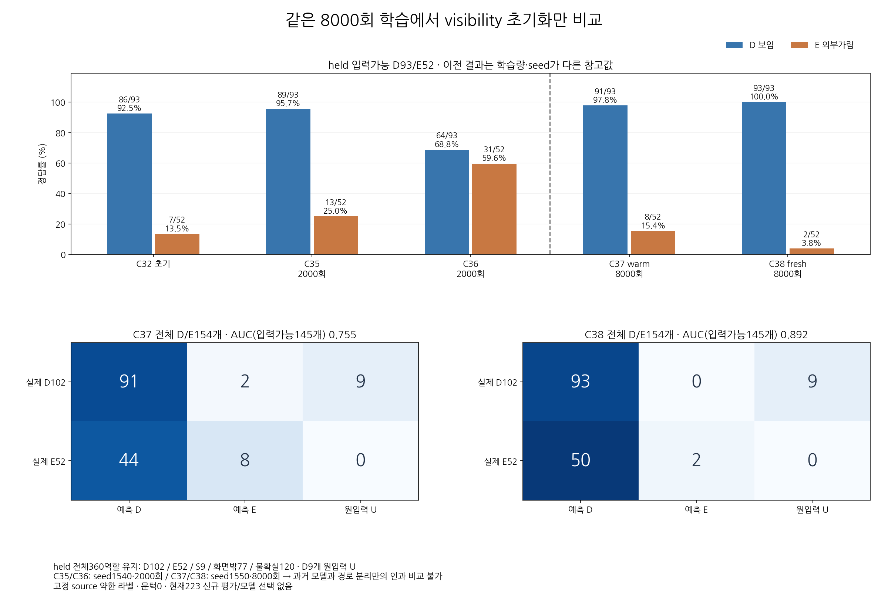
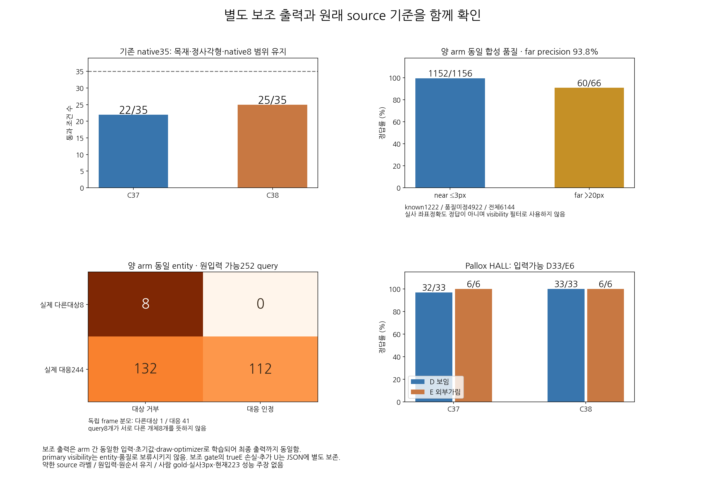
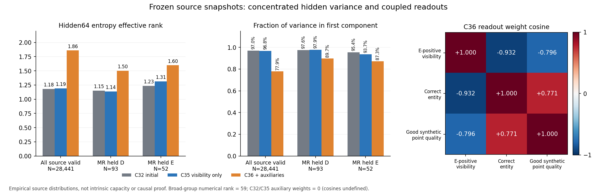

C37·C38을 각각8000회 실제 학습하고 전체28976행·학습기록·평가 수치를 독립 검산했다. 새로 학습한 C38의 점수 구분은 AUC0.892로 개선됐지만, 고정 판정에서는 가림을52개 중2개만 검출했다. 단순한 문턱 이동만으로 전체 기준을 만족시킬 수도 없다.
V155 단계 완료 · 전체 목표 미해결 · 두 모델 모두 source 기준 미달 · 채택 없음 · 현재223 신규 접근0
2026-10-23T22:53:03.237886+00:00 · 전체 수치·근거 JSON · 실제 학습 종료 기록
가림 판단224513개 파라미터를 유지하고, 대상 일치24705개·좌표 품질221825개 파라미터를 별도 경로로 만들었다. 총471043개다. 가림 경로와 보조 경로는 optimizer와clipping도 분리했다. 보조 두 경로끼리는 보조 optimizer·clipping을 함께 쓴다. 보조 손실을100만 배 키운 가상 입력 검사에서도 가림 가중치·AdamW 상태가 원본과 완전히 같았고, 실제 두 모델의 보조 초기·최종 가중치와 전체 보조 출력도 같았다.
C37은 C32 가림 가중치에서 이어 학습하고 C38은 새 가중치에서 시작했다. 두 모델에 동일한8000회 표본·손실·seed1550을 적용했다. 기존 C35/C36은2000회·seed1540이므로 이전 모델과의 차이를 경로 분리만의 효과로 해석하지 않는다. 좌표 예측·수정과 PnP는 하지 않았다.
입력가능D93/E52의 recall과precision이다. 보류율은 원입력불가D9까지 포함한 알려진D/E154개 기준이다. 전체45장360행에서 S9·화면밖77·미확정120을 유지했다. 학습은 별도185장만 사용했고 라벨과 순서를 바꾸지 않았다.
| 모델 | 보임 보존 recall | 외부 가림 recall | 외부 가림 precision | AUC145 | 보류율154 |
|---|---|---|---|---|---|
| 이전 C35 · 2000회 | 89/93 · 95.7% | 13/52 · 25.0% | 76.5% | 0.785 | 5.8% (9/154) |
| 이전 C36 · 2000회 | 64/93 · 68.8% | 31/52 · 59.6% | 51.7% | 0.702 | 5.8% (9/154) |
| C37 이어 학습 · 8000회 | 91/93 · 97.8% | 8/52 · 15.4% | 80.0% | 0.755 | 5.8% (9/154) |
| C38 새로 학습 · 8000회 | 93/93 · 100.0% | 2/52 · 3.8% | 100.0% | 0.892 | 5.8% (9/154) |
같은8000회 대조에서 C38은 C37보다 보임2개를 회복했고 가림6개를 잃었다. 두 모델은 학습 장면의D341/E49를 모두 맞혔다. 그러나 분리된 공개 장면에서는 가림 누락이 많아, 학습에서 맞힐 수 있다는 사실만으로 장면 전이를 증명하지 못했다.

C38 AUC0.892는 점수 순서가 더 유용해졌다는 신호다. 하지만 보임90% 이상을 유지할 때 가능한 가림 정답의 사후 최대치는 C37 15/52, C38 33/52로, 사전에 정한42/52에 미달했다. 기존native35 기준도 두 모델 모두 어떤 단일global threshold로 전부 만족시킬 수 없었다. 특정 문턱 수치를 내보내거나 선택·적용하지 않았으며 주 결과는raw0 그대로다. 문턱 존재성 진단
독립 대상 판별은 학습의양성638·음성365를 모두 맞혔지만 검증에서는 맞는 대상244개 중132개를 거부했다. 대상이 맞는41프레임 중23프레임에 해당한다. 다른 대상8개 query는 한 프레임뿐이다. 가림E52중23개도 대상이 아니라고 거부해, 이 출력으로 보류시키면 C37의맞힌E8개는1개, C38의E2개도1개만 남는다. primary visibility에는 이 보류를 적용하지 않았다.
합성 품질 검증은 큰오차60/66·작은오차1152/1156, 큰오차 precision60/64=93.8%였다. 품질 정답미정4922행은 그대로다. 실사의정확한좌표품질 정답을 새로 만든 것은 아니며 품질 출력으로 가림 평가행을 제거하지 않았다. 기존native35는22/35·25/35로 모두 미달이고, 별도PalloxHALL은입력가능D32/33·33/33,E6/6이었다.

기존C32/C35/C36의 저장 특징을 동결 재실행해 전체28976행의 원래3출력과 byte 일치를 먼저 확인했다. 전체입력가능28441행의 entropy effective rank는1.180→1.191→1.860이었다. C36이 더 붕괴했다는 가설을 뒷받침하지 않았다. 수치rank는59/60이며 경험적분산집중을 이론적capacity1~2차원으로 해석하지 않는다.
C36의가림·대상 출력이 강하게반대방향으로 결합된 것은 관측됐다. 다만 가림E와정상개체/좋은점은 양성 의미가 다르므로 부호 자체가 오류의 증명은 아니다. 이번 분리 제어는 실제 구현됐지만 성능 문제를 없애지는 못했다.

현재 목표는 처음 추론한 키포인트 중심에서 대상 팔레트의 보임·외부가림과 좌표 신뢰도를 구분하는 것이다. 자기 가림의 상위 기하 처리와 목재·정사각형 전체 범위를 유지한다. 이 공개 source 결과만으로 성공했다고 할 수 없다.
다음 공개 자료 진단에서는 학습/검증의 대상 context와 crop 범위, 프레임별 대상 오류, 가림 누락을 확인한다. 기존 검증45장을 학습으로 바꾸거나 라벨을 다시 쓰지 않는다. 추가 공개 학습자료의 가용성은 공식 manifest로 확인하며, 새 학습 전에 공개·합성 전용 설계를 먼저 고정한다.
사용자223장에서 C35~C38을 모두 동결 비교할 실행 초안도 준비했다. 아직 실행하지 않았고 V155 정책으로는 실행할 수 없다. 별도 단계에서 기존 C16의 원래 ALL1784×2 출력 일치를 확인한 뒤 4개 모델을 모두 같은 입력으로 비교한다. 그 결과로 다음 모델·문턱·가중치·checkpoint를 선택하지 않는다. 실제 좌표 품질 평가는 권위가 확인된 보임 수동2D 좌표만 별도로 사용하며, 숨은 점의 명목 위치를 정확한 pixel gold로 간주하지 않는다. 다음단계의사전약속
최신 실제 평가 포인터는 V149 그대로이며, 이번 단계에서는 private 입력·라벨·score·가중치에 새로 접근하거나 추론하지 않았다. 이 자료는 과거 반복 평가로 개발에 노출돼 blind test가 아니다. 기존 V149 평가
공개 의미상 역할 라벨은 assistant의 약한 검토이며 사람 gold가 아니다. 제공 pose의 cm 오차 가능성과 Euro목재/정사각형 실사의 차이가 남는다. 기존 AUX29는 이번에 재검증하지 않았다. 실제 PNG3개를 확인했고 HTML은 로컬 링크·구조만 검산했다. 브라우저 렌더링 확인 주장은 없다.